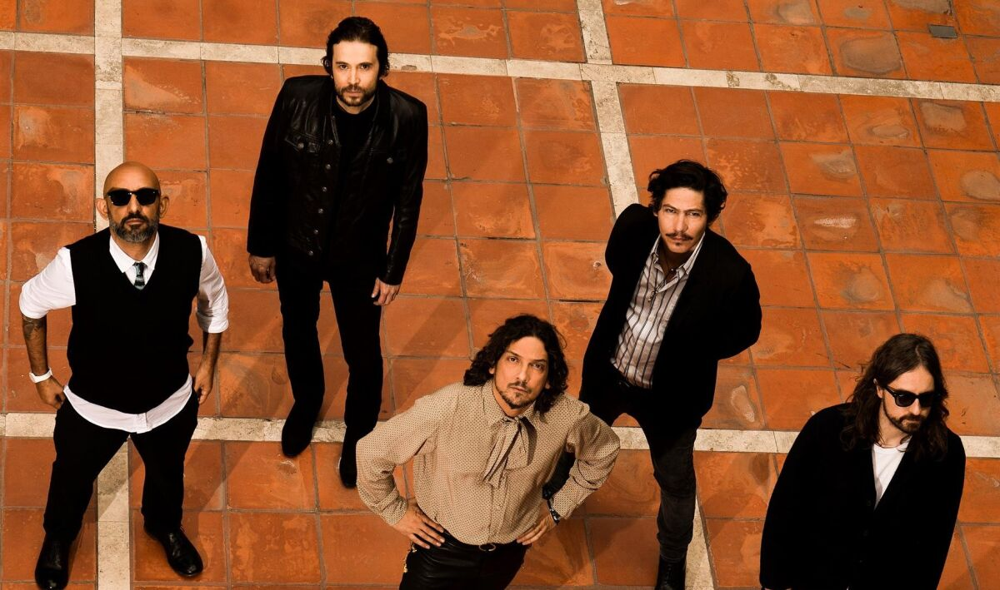

Zoé es una banda de rock alternativo originaria de México. Formada en 1997, el grupo está compuesto por León Larregui (voz), Sergio Acosta (guitarra), Jesús Báez (teclado), Ángel Mosqueda (bajo) y Rodrigo Guardiola (batería).
Con una propuesta musical única que combina elementos del rock, pop y electrónica, Zoé ha logrado consolidarse como una de las bandas más destacadas de la escena musical latinoamericana. Han lanzado varios álbumes exitosos y han obtenido numerosos premios y reconocimientos a lo largo de su carrera.
Si deseas conocer más sobre Zoé y escuchar su música, visita su sitio web oficial.